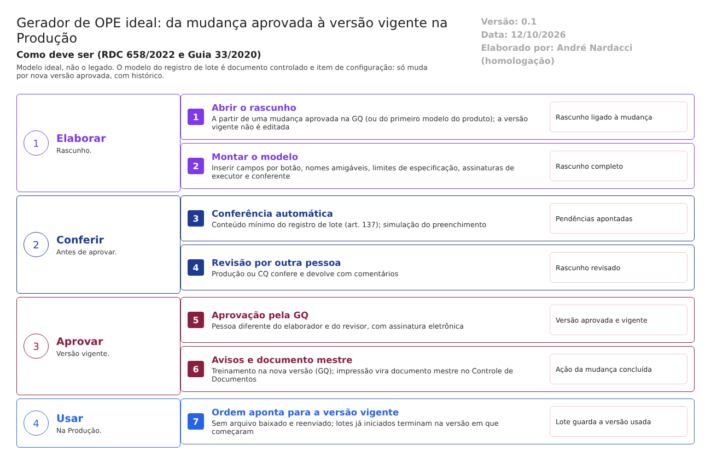

O ideal. Como o Gerador de OPE deve trabalhar para atender à RDC 658/2022 e ao Guia 33/2020. Este documento não descreve o legado. Usa o que foi levantado no código só para mostrar o que manter, o que corrigir e o que construir. Complementa modelo-ideal/01-qualidade-entre-modulos.md, que define as travas entre os módulos. Versão 0.1, de 12/10/2026, para validação com a Produção e a Garantia da Qualidade.
1. O papel do Gerador de OPE no ERP
O Gerador monta a instrução de fabricação eletrônica de cada produto: o registro de lote que o operador preenche na Produção. Por isso, o modelo é um documento controlado (RDC 658/2022, arts. 133 a 135) e, ao mesmo tempo, um item de configuração do sistema (Guia 33/2020, 11.7).
No modelo ideal, o modelo do registro de lote só chega à Produção aprovado. Ele nasce de uma mudança aprovada, passa por revisão e aprovação com assinatura e vira uma versão vigente. A Produção usa sempre essa versão, e cada lote guarda a versão que usou.
| O Gerador faz | O Gerador não faz |
|---|---|
| Monta e mantém o modelo de cada produto, em rascunho | Pôr em uso um modelo sem aprovação |
| Confere sozinho se o modelo tem o mínimo do registro de lote | Alterar a versão vigente (toda mudança é uma nova versão) |
| Leva o modelo aprovado à Produção, sem arquivo intermediário | Decidir se uma mudança é necessária (é da GQ, trava 8) |
| Guarda o histórico de cada versão e de cada alteração | Executar o lote (é da Produção) |
| Define limites, assinaturas e controles de cada etapa | Exigir programação para um produto novo |
2. Como o trabalho anda

O modelo passa por estas situações, nesta ordem, e cada mudança fica no histórico:
| Situação do modelo | Quem leva a ela | O que o sistema confere |
|---|---|---|
| Rascunho | Elaborador, a partir de uma mudança aprovada na GQ (ou do primeiro modelo do produto) | Produto com registro válido; um modelo por produto, com versões |
| Em revisão | Elaborador, ao concluir | Conteúdo mínimo do registro de lote (seção 4); simulação do preenchimento sem erro |
| Aprovado e vigente | Aprovador (GQ), diferente do elaborador e do revisor, com assinatura eletrônica | Revisão feita por outra pessoa; treinamento na nova versão planejado (trava 6) |
| Substituído | Sistema, quando a versão seguinte é aprovada | Lotes já iniciados terminam na versão em que começaram |
| Obsoleto | Aprovador | Produto descontinuado; sem lote em andamento |
3. As funções do Gerador ideal
Ação: Manter = o legado já faz como deve; Corrigir = existe, mas não atende; Construir = não existe.
| # | Função | Referência | Ação | Como deve funcionar | No legado hoje |
|---|---|---|---|---|---|
| 1 | Instrução de fabricação aprovada, por produto | Arts. 133 a 135 | Construir | Elaborador, revisor e aprovador registrados, pessoas diferentes, com assinatura eletrônica e data do servidor. Só o aprovado vai para a Produção | Não existe aprovação |
| 2 | Mudança só por nova versão aprovada | Arts. 176 e 177; art. 8º, XII | Construir | O rascunho da nova versão nasce de uma mudança aprovada na GQ e fica ligado a ela. A versão vigente nunca é editada | Cada ajuste altera o modelo em uso |
| 3 | Versão vigente única, com vigência | Arts. 119 e 121 | Construir | Número de versão automático, data de vigência, uma só vigente por produto. A ordem de produção aponta para a versão vigente; o lote guarda a versão usada | Revisão fixa em "1"; arquivo baixado e reenviado na ordem |
| 4 | Histórico de cada alteração | Art. 125 | Construir | Valor anterior, novo, quem, quando e motivo, em cada parte do modelo (texto, campo, assinatura, limite) | Sem histórico |
| 5 | Conteúdo mínimo do registro de lote | Art. 137 | Construir | Antes de ir à revisão, o sistema confere o mínimo: identificação do produto e do lote, início e fim de cada etapa, insumos com lote e quantidade, equipamentos, controles em processo, rendimento, assinaturas | Nenhuma conferência |
| 6 | Limites de especificação por campo | Art. 198 | Construir | Mínimo e máximo como dado do campo, vindos da especificação aprovada. Fora do limite, a Produção bloqueia e abre investigação (trava 10) | Só comparação entre dois campos |
| 7 | Assinatura de quem executa e de quem confere | Guia 33, 9.3.2.3 | Corrigir | Etapas críticas exigem executor e conferente, pessoas diferentes, com senha. O modelo não pode retirar essas assinaturas | Assinatura opcional, escolhida campo a campo |
| 8 | Gestão das mudanças e da configuração | Guia 33, 11.7.1 | Corrigir | O modelo é um item de configuração: só muda por mudança aprovada, com versão e histórico. O comportamento de cada produto fica no modelo, não em programas | Gravação direta; três classes programadas por produto |
| 9 | Especificação da configuração aprovada pela empresa | Guia 33, 9.6.2.1 | Corrigir | A versão aprovada é a especificação da configuração. A impressão do modelo vira o documento mestre no Controle de Documentos, com a mesma versão | Impressão existe; sem aprovação nem ligação com o Controle de Documentos |
4. Como o editor deve ser
A dificuldade de uso não é um tema da norma, mas aumenta o erro de configuração (R-OPE-10). O editor ideal corrige os 13 pontos levantados no legado (01-regras-de-negocio.md, seção 4):
| Hoje (legado) | Como deve ser |
|---|---|
Campo criado digitando {0} no texto (U1) |
Botão "Inserir campo", com o tipo escolhido na hora |
| Apagar texto apaga campos sem aviso (U2) | Campo é um objeto próprio; excluir pede confirmação e mostra o que depende dele |
Nomes técnicos (E1S2_CAMPO3) e o rótulo NomeAmigavel (U3) |
Nome amigável obrigatório, usado em todas as listas, validações e fórmulas |
| "Classe do Produto" com nomes de programas (U4) | Sem classe: o comportamento é configurado no modelo |
| Duas configurações parecidas para "quem pode" (U5) | Uma só: "quem preenche" e "quem assina", com texto de ajuda |
| Partes que aparecem e somem; abas só depois de salvar (U6) | Assistente em passos, com o que falta configurar sempre visível |
| Termos técnicos (U7) | Vocabulário da área: "instrução", "campo", "limite", "assinatura" |
| "OPE" com dois sentidos (U8) | "Modelo do registro de lote" no Gerador; "OPE" só para a ordem do lote |
| Dois editores iguais na mesma sessão (U9) | Subetapas-padrão como biblioteca, com o modelo aberto sempre indicado na tela |
| Sem menu próprio (U10) | Menu do módulo, pelas funções do Principal |
| Gravação imediata no modelo em uso (U11) | Rascunho, com "visualizar como o operador verá" e "descartar alterações" |
| Mensagens "Error" (U12) | Mensagens em português, dizendo o que corrigir |
| Ajuda que lista botões (U13) | Ajuda por passo, com exemplo de um modelo completo |
5. Integrações com os outros módulos
Todas as integrações seguem o requisito 16 do documento 01: quando falham, avisam e não deixam a operação pela metade.
| Com | O Gerador recebe | O Gerador envia | Quando | Trava |
|---|---|---|---|---|
| Garantia da Qualidade | Mudança aprovada que autoriza a nova versão | Aviso de versão aprovada, para o treinamento e para encerrar a ação da mudança | Ao abrir o rascunho; ao aprovar | 6, 8 |
| Controle de Documentos | — | Impressão da versão aprovada como documento mestre, com a mesma versão | Ao aprovar | 8 |
| Produção | Lotes em andamento por versão (para não trocar a versão no meio do lote) | Versão vigente do modelo, ligada à ordem de produção | Ao aprovar; ao planejar cada lote | 8 |
| Controle da Qualidade | Limites de especificação aprovados do produto e do processo | Quais etapas pedem análise | Ao montar o modelo | 10 |
| Estoque | Insumos do produto e dados da pesagem | — | Ao montar o modelo | 1 |
| Principal | Usuários, funções, funções profissionais e assinatura eletrônica | — | Em cada gravação | — |
6. Quem faz o quê no Gerador
| Função | Pode | Não pode |
|---|---|---|
| Elaborador (Produção ou engenharia de processo) | Criar e editar rascunhos; enviar para revisão | Aprovar; editar a versão vigente |
| Revisor (Produção ou CQ, outra pessoa) | Conferir o rascunho e devolver com comentários | Revisar o que elaborou |
| Aprovador (Garantia da Qualidade) | Aprovar ou recusar a versão, com assinatura | Aprovar o que elaborou ou revisou |
| Administrador do sistema | Dar acesso e manter as subetapas-padrão técnicas | Alterar o conteúdo de um modelo de produto |
A função é conferida no servidor, em toda gravação, e não só na tela (documento 01, requisito 15). Toda decisão pede assinatura eletrônica (requisito 14).
7. O que manter do legado
O que o código mostra que já funciona como deve e vale a pena levar para a nova versão (a confirmar nos testes):
- A estrutura de etapa, subetapa e campo, com ordem e marcações (finalização, reconciliação, liberação, pedido de análise ao CQ).
- Os tipos de campo e as máscaras (data, hora, decimais), que evitam digitação fora do formato.
- As funções de validação entre campos e com a data do sistema, acrescentando o limite fixo.
- As fórmulas de cálculo com conferência antes de salvar.
- O preenchimento automático de dados de outros cadastros (lote, validade, registro do produto) e a ligação com a pesagem do Estoque.
- A assinatura por função profissional em cada campo, tornando-a obrigatória nas etapas críticas.
- As subetapas-padrão, como biblioteca reaproveitável.
- Visualizar como o operador verá e imprimir o modelo.
8. Pontos para validar com a Produção e a GQ
- Quem elabora, quem revisa e quem aprova os modelos de registro de lote hoje.
- Qual é o conteúdo mínimo que a empresa exige em todo registro de lote (além do art. 137).
- Onde estão hoje os limites de especificação de cada produto e etapa.
- Quais etapas são críticas e exigem executor e conferente.
- Se a impressão do modelo deve ser o documento mestre no Controle de Documentos ou se o documento mestre continua à parte.
O que a ANVISA pede: textos citados
Texto literal das normas citadas em cada tema, extraído dos arquivos da pasta Documentação/ (RDC nº 658/2022 em português e Guia nº 33/2020) por homologacao/ferramentas/citar_normas_diagnostico.py. "(...)" marca trechos omitidos. No portal, clique na referência de cada tema para ver o texto.
Tema 1 · Instrução de fabricação aprovada, por produto
RDC 658/2022, art. 133
Art. 133. Devem existir fórmulas de fabricação e instruções de processo aprovadas e por escrito para cada produto e tamanho de lote a ser fabricado.
RDC 658/2022, art. 134
Art. 134. A fórmula de fabricação deve incluir:
I - nome e código de referência do produto relacionado à sua especificação;
II - descrição da forma farmacêutica, concentração do produto e tamanho do lote;
III - lista de todas as matérias-primas a serem utilizadas, com a quantidade descrita de cada uma, com a menção a qualquer substância que possa desaparecer durante o processo; e
IV - declaração do rendimento final esperado com os limites aceitáveis e dos rendimentos intermediários relevantes, quando aplicável.
RDC 658/2022, art. 135
Art. 135. As instruções de processo devem incluir:
I - declaração do local de processo e do equipamento principal a ser utilizado;
II - os métodos, ou referência aos métodos, a serem utilizados para preparar os equipamentos críticos (por exemplo, limpeza, montagem, calibração, esterilização);
III - verificações para confirmar que o equipamento e a estação de trabalho estão livres de produtos anteriores, documentos ou materiais não necessários para o processo planejado, e que o equipamento esteja limpo e adequado para uso;
IV - instruções de processo detalhadas por etapa [por exemplo verificações de materiais, pré- tratamentos, sequência de adição de materiais e parâmetros críticos do processo (tempo, temperatura etc.);
V - as instruções para qualquer controle em processo e seus limites;
VI - quando necessário, os requisitos para o armazenamento dos produtos a granel; incluindo o recipiente, a rotulagem e as condições especiais de armazenamento, quando aplicável; e
VII - quaisquer precauções especiais a serem observadas.
Tema 2 · Mudança só por nova versão aprovada
RDC 658/2022, art. 176
Art. 176. Quando qualquer nova fórmula de fabricação ou método de preparação for adotado, devem ser tomadas medidas para demonstrar sua adequação ao processo da rotina.
Parágrafo único. O processo definido de que trata o caput deste artigo, que usa os materiais e equipamentos estabelecidos, deve demonstrar que produz o produto de acordo com a qualidade exigida de forma consistente.
RDC 658/2022, art. 177
Art. 177. Alterações significativas no processo de fabricação, incluindo qualquer mudança no equipamento ou materiais, que possam afetar a qualidade do produto e/ou a reprodutibilidade do processo, devem ser validadas.
RDC 658/2022, art. 8º
Art. 8º Um Sistema da Qualidade Farmacêutica adequado à fabricação de medicamentos deve garantir que:
(...)
XII - estejam implementados procedimentos para a avaliação prospectiva de mudanças planejadas e sua aprovação antes da implementação, levando-se em consideração as notificações e aprovações regulatórias, quando necessário;
(...)
Tema 3 · Versão vigente única, com vigência
RDC 658/2022, art. 119
Art. 119. Os documentos contendo instruções devem ser aprovados, assinados e datados por pessoas apropriadas e autorizadas.
§ 1º Os documentos devem ter conteúdo não ambíguo e identificação única.
§ 2º A data de efetividade dos documentos deve ser definida.
RDC 658/2022, art. 121
Art. 121. Os documentos relacionados ao Sistema de Gestão da Qualidade Farmacêutica devem ser revisados regularmente e mantidos atualizados.
Parágrafo único. Quando um documento for revisado, os sistemas devem operar de forma a impedir o uso inadvertido de documentos obsoletos.
Tema 4 · Histórico de cada alteração
RDC 658/2022, art. 125
Art. 125. Toda a alteração feita no registro de um documento deve ser assinada e datada, devendo permitir a leitura da informação original.
Parágrafo único. Quando apropriado, o motivo da alteração deve ser registrado.
Tema 5 · Conteúdo mínimo do registro de lote
RDC 658/2022, art. 137
Art. 137. Um registro de processamento de lote deve ser mantido para cada lote processado.
§ 1º Este registro deve ser baseado nas partes relevantes da Fórmula de Fabricação e nas Instruções de Processo atualmente aprovadas, e deve conter as seguintes informações:
I - nome e o número do lote do produto;
II - datas e horários de início de fases intermediárias significativas e de conclusão da produção;
III - identificação (iniciais ou rubricas) do(s) operador(es) que realizou(aram) cada etapa significativa do processo e, quando apropriado, o nome de qualquer pessoa que verificou essas operações;
IV - número do lote e/ou número do controle analítico, bem como as quantidades de cada matéria-prima efetivamente pesada, incluindo o número do lote e a quantidade de qualquer material recuperado ou reprocessado adicionado;
V - qualquer operação de fabricação ou evento relevante e equipamento principal usado;
VI - registro dos controles em processo e as iniciais da(s) pessoa(s) que os executaram e os resultados obtidos;
VII - rendimento obtido do produto em diferentes e relevantes etapas de fabricação;
VIII - observações sobre quaisquer problemas incluindo os detalhes, com autorização assinada para qualquer desvio da Fórmula de Fabricação e Instruções de Processo; e
IX - aprovação das operações de fabricação pela pessoa responsável.
§ 2º Nos casos de processos validados, continuamente controlados e monitorados, os relatórios gerados automaticamente podem ser limitados a resumos de conformidade e relatórios de dados de exceção/resultados fora de especificações.
Tema 6 · Limites de especificação por campo
RDC 658/2022, art. 198
Art. 198. Quaisquer controles necessários em processo e controles ambientais devem ser realizados e registrados.
Tema 7 · Assinatura de quem executa e de quem confere
Guia nº 33/2020, item 9.3.2.3 (Requisitos Operacionais)
Funções – são os requisitos funcionais que habilitam o sistema a executar o processo de negócio que está sendo automatizado, tais como: - (...) - Utilização de assinaturas eletrônicas; - (...)
Tema 8 · Gestão das mudanças e da configuração
Guia nº 33/2020, item 11.7.1 (Introdução)
(...) Todas as mudanças propostas durante a fase operacional do sistema, sejam elas relacionadas a software, hardware, infraestrutura ou utilização do sistema, devem ser sujeitas a um processo formal de controle de mudanças. (...)
Um item de configuração é um componente do sistema que não é alterado como resultado de uma operação normal do sistema. Itens de configuração só podem ser alterados por meio de um processo de gerenciamento de mudanças. Devem existir procedimentos formais para identificar, definir e estabelecer os itens da configuração inicial e para controlar e registrar as modificações e liberações de itens de configuração, incluindo atualizações e pacotes.
Tema 9 · Especificação da configuração aprovada pela empresa
Guia nº 33/2020, item 9.6.2.1 (Configuração)
Para produtos configuráveis devem ser preparadas especificações de configuração que compõem o sistema para que este atenda aos requisitos do usuário. Isto inclui a definição de todas as configurações e parâmetros.
Estas especificações de configuração são produzidas pelo fornecedor do sistema e revisadas e aprovadas pela empresa regulada.
É possível manter este conjunto de especificações de configuração em sistemas que possuem gerenciamento de configuração robusto (audit trails detalhados e completos). Tal abordagem deve ser bem documentada.